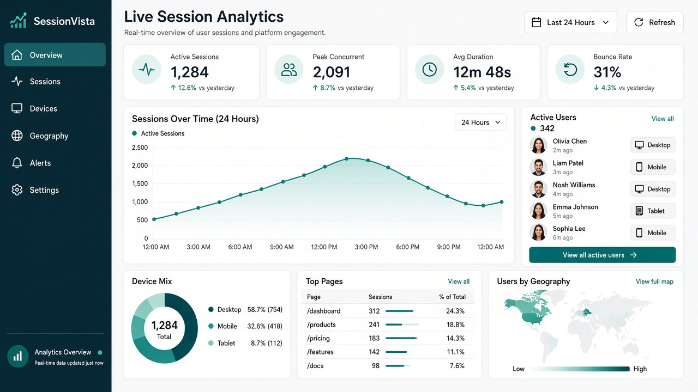
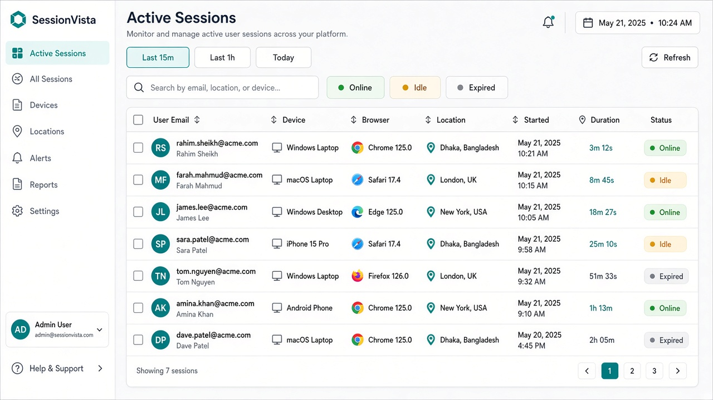
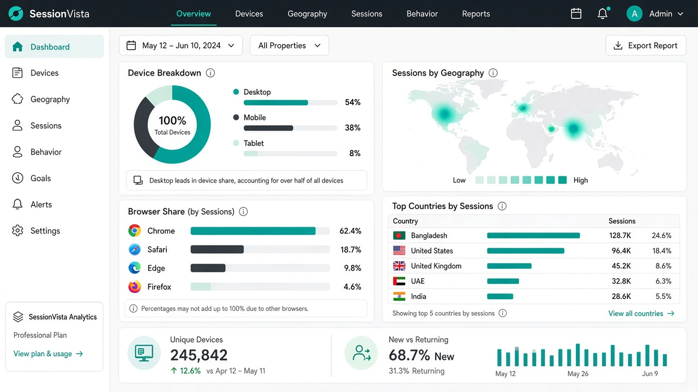

Live session radar
Track online, idle, and expired sessions with automatic heartbeats and status transitions.
Laravel 11 / 12 · Real-time session intelligence
See every active session, device, and geography signal in one premium operations dashboard — built for production Laravel apps.

One package. Full visibility. Business-ready UI.
Track online, idle, and expired sessions with automatic heartbeats and status transitions.
Parse user agents into desktop, mobile, tablet, browser, and platform insights.
Top pages, bounce rate, average duration, and 24-hour activity charts out of the box.
Optional HTTP GeoIP provider with clean country/city storage for expansion markets.
Auto-discovery, publishable config/views/migrations, and secure middleware-gated routes.
Power custom admin widgets or refresh loops with `/session-vista/api/overview`.
Designed for founders, CTOs, and support leads — not just developers.


Composer + migrate + open the dashboard.
composer require imranbru99/laravel-session-visual-analytics
php artisan vendor:publish --tag=session-vista-config
php artisan vendor:publish --tag=session-vista-migrations
php artisan migrate
# Dashboard: /session-vista
# Demo UI: open /demo/dashboard.htmlImran Ahmed builds production Laravel, Next.js, and AI systems for global teams.